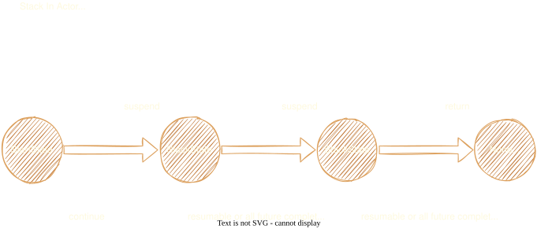

Stack 执行模型
Stack 是 otavia 最具特色的创新。它取代了传统的回调和协程，使用手动管理的状态机和池化对象。
核心概念
Stack
Stack 是管理单条消息处理生命周期的执行帧。它维护两条双向 promise 链：
- 未完成链（
uncompletedHead/uncompletedTail）：已发出但尚未收到回复的 Ask 的 promise - 已完成链（
completedHead/completedTail）：已收到回复的 promise
每个 Stack 包含：
stackState: StackState— 状态机中的当前状态nextState: StackState— 挂起时要转换到的状态actor: AbstractActor— 所属 actor
StackState
接口，包含 resumable(): Boolean 和 id: Int。用户定义的状态实现此接口（通常结合 Poolable 用于回收）。StackState.start 是单例初始状态，其 resumable() 返回 true。
StackYield
密封 trait，两个单例：
SUSPEND（completed = false）：Stack 被挂起，等待异步操作RETURN（completed = true）：Stack 完成，可被回收
suspend 和 return
// 挂起：保存下一个状态并返回 SUSPEND
def suspend(state: StackState): StackYield = {
this.nextState = state
StackYield.SUSPEND
}
// return：Stack 调用此方法完成
// 对于 NoticeStack：
stack.return() // 返回 StackYield.RETURN
// 对于 AskStack：
stack.return(reply) // 发送回复给 sender，返回 StackYield.RETURN
Stack 类型
| 类型 | 用途 | return 方法 |
|---|---|---|
NoticeStack[N] |
管理 Notice 执行 | return() |
AskStack[A] |
管理 Ask 执行 | return(reply) 或 throw(cause) |
ChannelStack[T] |
管理 Channel 入站消息 | return(result) |
BatchNoticeStack[N] |
批量 Notice 执行 | return() |
BatchAskStack[A] |
批量 Ask 执行 | return(reply) 或 return(Seq[(Envelope, Reply)]) |
AskStack
AskStack 跟踪 Ask 消息、发送者 Address 和用于回复关联的 askId：
// 用户实现：
override protected def resumeAsk(stack: AskStack[MyAsk]): StackYield = {
stack.state.id match {
case StartState.id =>
val state = FutureState[MyReply]()
target.ask(stack.ask.asInstanceOf[MyAsk], state.future)
stack.suspend(state)
case FutureState.id =>
val reply = stack.state.asInstanceOf[FutureState[MyReply]].future.getNow
// 处理回复...
stack.return(MyReply(...))
}
}
ChannelStack
与其他 Stack 类型不同，ChannelStack 同时扩展 Stack 和 QueueMapEntity，与 Channel 的 inflight QueueMap 集成。ChannelStack 不会被 switchState 回收 — 由 Channel 的 inflight 队列管理。
Future 和 Promise
设计理念
otavia 实现了自己的 Future/Promise 系统，与 Scala 标准库分离。以零内存分配为目标进行设计：
MessagePromise[R]就是MessageFuture[R]— 同一个对象，无包装分配MessagePromise就是FutureDispatcher中的哈希节点 — 直接拥有hashNext，无包装- 所有 Promise 通过
ActorThreadIsolatedObjectPool池化
MessagePromise / MessageFuture
用于 Actor 之间的 Ask/Reply：
aid: Long— 消息 ID（FutureDispatcher 中的哈希键）tid: Long— 超时注册 ID（用于取消）result: AnyRef/error: Throwable— 完成状态stack: Stack— 所属 Stack
ChannelPromise / ChannelFuture
用于 Actor 到 Channel 的请求/响应：
ch: Channel— 关联的 channelask: AnyRef— Channel 操作请求callback: ChannelPromise => Unit— 可选的完成回调
辅助 State
FutureState
FutureState[R] 组合 StackState 和 MessageFuture[R]。这是用户发送 Ask 的标准机制：
val state = FutureState[MyReply]()
targetAddress.ask(myAsk, state.future)
stack.suspend(state)
// 恢复时：
val reply = state.future.getNow
ChannelFutureState
同模式但包装 ChannelFuture，用于异步 channel 操作（bind、connect、register）。
StartState
单例初始状态。resumable() = true，确保第一个 promise 完成时立即触发恢复。
FutureDispatcher
FutureDispatcher 是自定义的基于桶链式冲突解决的哈希表，将 Long 消息 ID 映射到 MessagePromise 实例。混入 AbstractActor。
设计特点：
loadFactor = 2.0（当contentSize + 1 >= threshold时增长）index(id) = (id & mask).toInt— 位掩码索引- 通过
MessagePromise.hashNext链表解决冲突（无包装对象） - 当表增长到 4 倍初始容量但使用率 < 50% 时自动缩容
状态机转换
switchState（核心转换引擎）
SUSPEND 路径：
- 从 Stack 获取
oldState，获取nextState（由suspend设置） - 如果状态改变：设置新状态，回收旧状态（如果是
Poolable） - 断言 Stack 仍有未完成的 promise
RETURN 路径：
- 回收当前 state
- 断言
stack.isDone - 非
ChannelStack→ 将整个 Stack 回收到对象池
handlePromiseCompleted（恢复逻辑）
当 Reply 到达并完成 Promise 时：
stack.moveCompletedPromise(promise)— 从未完成链转移到已完成链- 检查：
stack.state.resumable()或!stack.hasUncompletedPromise - 如果可恢复：重新分发 Stack（如
dispatchAskStack(stack)）
完整 Ask/Reply 生命周期
阶段 1：发送
ActorA.ask(myAsk) → 创建 FutureState[Reply]
→ PhysicalAddress.packaging → 从池获取 Envelope
→ sender.attachStack(messageId, future):
promise.stack = currentStack
promise.id = messageId
currentStack.addUncompletedPromise(promise)
FutureDispatcher.push(promise)
→ houseB.putAsk(envelope)
阶段 2：处理
ActorHouseB.run() → dispatchAsks()
→ receiveAsk → 从池获取 AskStack → setAsk → dispatchAskStack
→ resumeAsk(stack) 执行用户代码
→ stack.return(reply):
sender.reply(reply, askId) → reply Envelope → houseA.putReply()
阶段 3：恢复
ActorHouseA.run() → dispatchReplies()（最高优先级！）
→ receiveReply → 提取 reply + replyId
→ FutureDispatcher.pop(replyId) → MessagePromise
→ promise.setSuccess(reply)
→ handlePromiseCompleted(stack, promise):
moveCompletedPromise（未完成 → 已完成）
state.resumable() == true
→ dispatchAskStack(stack)（重新分发！）
→ resumeAsk 以新状态再次执行
→ state.future.getNow → 处理回复 → stack.return(finalReply)

对象池化
池化策略是积极且多层次的，旨在实现零 GC 操作：
- 线程隔离池：每个池化类型都有自己的
ActorThreadIsolatedObjectPool，每个线程一个SingleThreadPoolableHolder - 创建者亲和：在非创建者线程上回收的对象直接丢弃（由 GC 回收），避免跨线程池同步
- 空闲清理：60 秒超时触发，将 30 秒未访问的池缩减到最多 10 个对象
- Stack 级生命周期：完成的 promise 在
setState时回收。整个 Stack 通过recycleStack回收 - Envelope 即用即收：Envelope 在提取数据后立即回收，不持有到 Stack 生命周期结束
- 无包装对象：
MessagePromise=MessageFuture= 哈希节点（三合一）